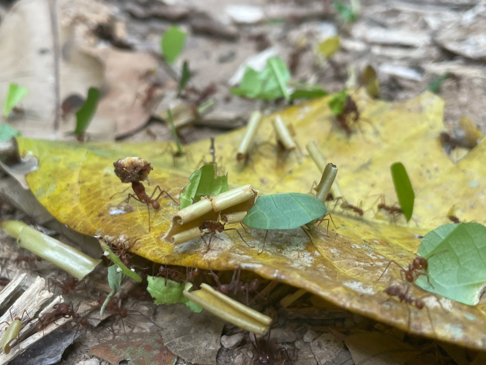
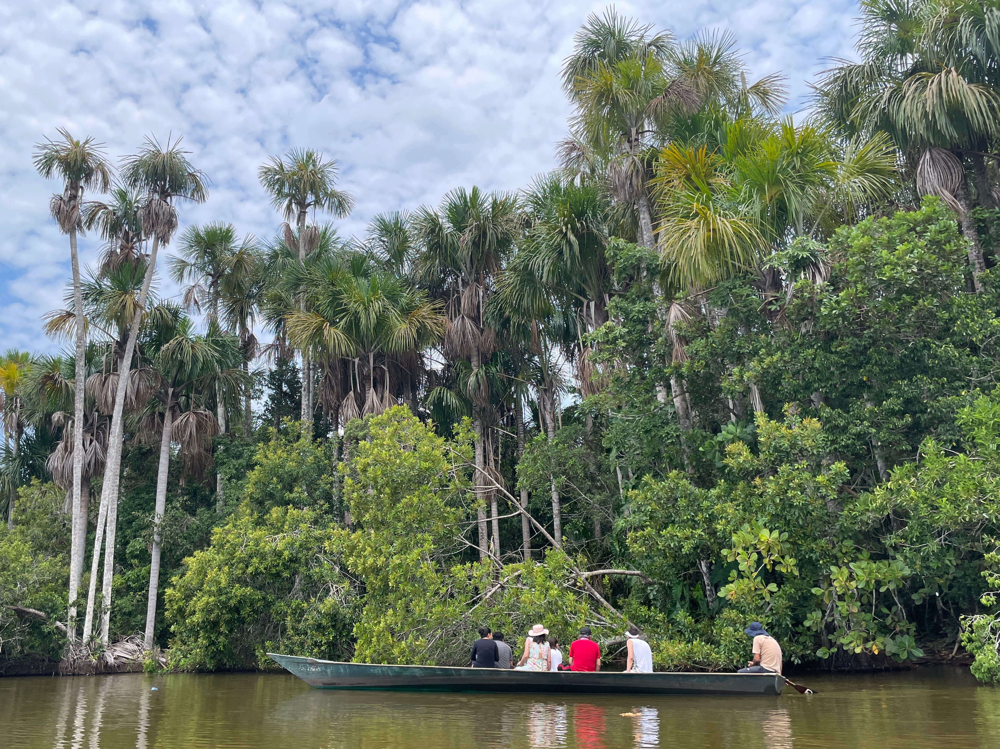

15 De digital
nomad burnout
De Amazone verkennen,
contrasten in Peru
en menselijk gemis.
De Amazone. De naam alleen al roept beelden op van ongerepte schoonheid en ongetemde wildernis. De afgelopen dagen kreeg ik het bericht dat ik binnenkort een maand als vrijwilliger aan de slag mag bij een workaway herbebossingsproject in de Boliviaanse stad Cobija. Maar voor het zover was, mocht ik in Peru alvast een dagje proeven van de jungle. Ik had me nu dan toch maar eens bij een reisorganisatie aangemeld voor een dagje uit. Het waren mijn laatste momenten in Peru en natuurlijk maakte dat wat los, omdat ik na bijna 3 maanden niet anders kan zeggen dan dat Peru een ongelofelijk goede keuze is geweest om dit avontuur te starten. Zo veel vriendelijke mensen, zo veel verschil in landschappen en cultuur en ja, ook erg betaalbaar. Drie maanden een zeer aangenaam weertje, mede dankzij het weerfenomeen El Nino en een ongekende cultuur waarin alles mogelijk is. Pak een microfoon en ga zingen op straat of stal je kleed uit en verkoop wat fruit. Wie het hardst roept, komt het verst. Mensen voor een gesloten deur die, wanneer er niemand open doet, nog minutenlang blijven doorkloppen. Soms onhandig maar vanuit een goed hart. Gastvrij, met de familie op 1 en altijd openstaan voor een praatje.
Terwijl ik met weemoed dacht aan mijn onvergetelijke tijd in Peru, kwamen een aantal andere toeristen en ik met de motorboot aan in het nationale park Tambopata. Na verschillende rupsen en cicaden, liepen we een colonne bladmieren tegen het lijf die, zo vertelde onze gids, tot wel 3 kilometer kunnen afleggen voor een heel specifiek blad. Na deze lange wandeling gebeurt het weleens dat een mier zich per ongeluk tegoed doet aan het verkeerde blad, waardoor hij zichzelf vergiftigt en zo verward raakt, dat hij alleen nog maar rondjes kan lopen. Zulke mieren worden dan natuurlijk zo snel mogelijk uit de kolonie gezet. Al snel naderden we het meer Sandoval, waarvan het gebied eromheen zo drassig en nat was dat we er alleen met een kano doorheen konden peddelen. Het was bloedje heet en iedereen deed zijn best om zich zo goed mogelijk te beschermen tegen de felle zonnestralen op het open water. Eenmaal op het meer zagen we langs de oever voortdurend allerlei moerasvogels: tijgerrijger, rode kardinaal, slangenhalsvogel, witte zwaluw, groene ibis, grijs gekapte houtral en als kers op de taart een hoatzin vogel, die je als je vogelliefhebber bent echt even moet opzoeken. Een prehistorisch beest, hier in de volksmond ook wel dinosaurus hoatzin genoemd.
De vogels waren niet bij te houden, een walhalla voor iedere bioloog. Waren we nog langer gebleven, dan hadden we waarschijnlijk naast schildpadden en brulapen ook nog kaaimannen, piranha's en ook vele mooie andere zoogdieren kunnen zien, maar al met al was het een onvergetelijke eerste kennismaking met een echt diep stukje Amazone regenwoud. Ondanks mijn angst voor spinnen, had ik me er toch ook op verheugd om nou eindelijk eens een echte grote spin in levende lijve te kunnen zien. En wat denk je? Terwijl we terug liepen, zagen we plotseling een Tarantula spin. Maar er was iets vreemds aan de hand, want deze spin, die ik toch echt ken als de koning onder de spinnen, werd meegesleurd door een minstens zo grote tarantula wesp. Deze wesp heeft blijkbaar zo’n krachtige steek, dat een mens het twee uur lang zou uitkermen van de pijn. Nadat de wesp zijn prooi naar een veilig plekje heeft gebracht, zal hij de spin parasiteren door een eitje in de spin te stoppen. Zo kan later zijn larve de spin van binnenuit opeten. Ongelofelijk dat de natuur zo samenhangt, en zich niet laat voorspellen.
 Het uitstapje naar de Amazone was een fantastische ervaring en het contrast met de stad Puerto Maldonado waar ik verbleef, kon haast niet groter. Eigenlijk al vanaf het moment dat ik Cusco had verlaten en richting de Boliviaanse grens trok, deden zich vreemde taferelen voor die ik niet kon rijmen met het mooie Peru dat ik tot dan toe had ervaren. Het eerste steegje wat ik bewandelde werd ik meteen nageroepen door mensen met ingevallen wangen en tatoeages op het gezicht waardoor ik me zelfs overdag niet altijd veilig voelde. In de supermarkt stond op de helft van de producten geen prijs, sommige poppen in kledingwinkels waren aangekleed met bivakmutsen, en het fruit op de markt was relatief duur en vaak bedorven. Puerto Maldonado gaat gebukt onder veel corruptie, prostitutie en geweld onder andere door goudwinning in de omliggende rivieren. Omdat er geen airbnb's waren die mij aanspraken verbleef ik in een hotel zonder gemeenschappelijke keuken waar je nog eens een praatje kon maken, of jezelf nuttig kon voelen door een boterham te smeren, in plaats van drie keer per dag in koffietentjes te zitten met luide muziek. Ik realiseerde me dat, na al die mooie dingen die ik al heb gezien, een mindere reisperiode er op een gegeven moment natuurlijk ook eens van zou kunnen komen. Hoewel ik zeker nog niet naar huis wilde, miste ik heel erg het dagelijks contact met mensen in deze omgeving.
Het uitstapje naar de Amazone was een fantastische ervaring en het contrast met de stad Puerto Maldonado waar ik verbleef, kon haast niet groter. Eigenlijk al vanaf het moment dat ik Cusco had verlaten en richting de Boliviaanse grens trok, deden zich vreemde taferelen voor die ik niet kon rijmen met het mooie Peru dat ik tot dan toe had ervaren. Het eerste steegje wat ik bewandelde werd ik meteen nageroepen door mensen met ingevallen wangen en tatoeages op het gezicht waardoor ik me zelfs overdag niet altijd veilig voelde. In de supermarkt stond op de helft van de producten geen prijs, sommige poppen in kledingwinkels waren aangekleed met bivakmutsen, en het fruit op de markt was relatief duur en vaak bedorven. Puerto Maldonado gaat gebukt onder veel corruptie, prostitutie en geweld onder andere door goudwinning in de omliggende rivieren. Omdat er geen airbnb's waren die mij aanspraken verbleef ik in een hotel zonder gemeenschappelijke keuken waar je nog eens een praatje kon maken, of jezelf nuttig kon voelen door een boterham te smeren, in plaats van drie keer per dag in koffietentjes te zitten met luide muziek. Ik realiseerde me dat, na al die mooie dingen die ik al heb gezien, een mindere reisperiode er op een gegeven moment natuurlijk ook eens van zou kunnen komen. Hoewel ik zeker nog niet naar huis wilde, miste ik heel erg het dagelijks contact met mensen in deze omgeving.
 Ik kon mezelf er niet bij neerleggen dat het in Puerto Maldonado niet wilde lukken. Daarom nam ik nog een abonnement op de sportschool, bezocht ik een voetbalwedstrijd en een zwembad, maar na twee weken zag ik de muren van mijn piepkleine hotelkamer letterlijk op mij afkomen. Ik voelde me nutteloos en op de receptiedames na kende ik hier niemand. En als je je dan zo eenzaam voelt, dan kunnen je reserves, je weerbaarheid en je energie in korte tijd heel snel minder worden. Het waren met afstand de minste weken van de reis tot nu toe en nota bene voor de hoogste prijs. Na twee weken had ik er genoeg van en besloot ik alvast de richting op te gaan van de Boliviaanse stad Cobija, waar binnen een aantal dagen toch de workaway vrijwilligerservaring mij stond te wachten. Maar ook de reis van het Peruaanse Puerto Maldonado naar het Boliviaanse Cobija verliep niet geheel vlekkeloos. In grensstad Inapairi, werd ik door een taxichauffeur opgelicht omdat de man ineens het dubbele bedrag vroeg en ook in een restaurant kostte het all inclusive eten ineens 30 in plaats van de vaste prijs 25 die ze me eerder vertelden. Allemaal van die kleine toevalligheidjes in een korte tijd waardoor het bijna leek of mensen dachten dat ze aan een alleenreizende westerling wel een extra centje konden verdienen.
Ik kon mezelf er niet bij neerleggen dat het in Puerto Maldonado niet wilde lukken. Daarom nam ik nog een abonnement op de sportschool, bezocht ik een voetbalwedstrijd en een zwembad, maar na twee weken zag ik de muren van mijn piepkleine hotelkamer letterlijk op mij afkomen. Ik voelde me nutteloos en op de receptiedames na kende ik hier niemand. En als je je dan zo eenzaam voelt, dan kunnen je reserves, je weerbaarheid en je energie in korte tijd heel snel minder worden. Het waren met afstand de minste weken van de reis tot nu toe en nota bene voor de hoogste prijs. Na twee weken had ik er genoeg van en besloot ik alvast de richting op te gaan van de Boliviaanse stad Cobija, waar binnen een aantal dagen toch de workaway vrijwilligerservaring mij stond te wachten. Maar ook de reis van het Peruaanse Puerto Maldonado naar het Boliviaanse Cobija verliep niet geheel vlekkeloos. In grensstad Inapairi, werd ik door een taxichauffeur opgelicht omdat de man ineens het dubbele bedrag vroeg en ook in een restaurant kostte het all inclusive eten ineens 30 in plaats van de vaste prijs 25 die ze me eerder vertelden. Allemaal van die kleine toevalligheidjes in een korte tijd waardoor het bijna leek of mensen dachten dat ze aan een alleenreizende westerling wel een extra centje konden verdienen.
 Om vanuit Peru Bolivia in te reizen moest ik een klein stukje door Brazilië, waar ik onderweg vergat om de in- en uitgaansstempels te laten zetten. Aangekomen bij de Boliviaanse douane zei de Boliviaanse politieman tegen mij, 'Zonder Braziliaanse in- en uitgaansstempels kom je Bolivia niet in, wandel maar terug naar het politiekantoor in Brazilië.’ Oliedom, van mezelf. Eenmaal in het Braziliaanse politiekantoor had de vrouw helaas ook geen goed nieuws. ‘Jongeman, of je reist terug naar de plaats waar je Brazilie bent binnengekomen en haalt een nieuwe binnenkomst stempel of je betaalt nu een boete van 100 Braziliaanse Real.’ Ik zat in zak en as. Het was 35 graden en mijn shirt was doordrenkt in het zweet. Het was een klein wonder, ik kon het Portugees niet verstaan maar na een poosje zette de vrouw, waarschijnlijk uit medelijden, toch maar een stempel in mijn paspoort, waardoor de weg richting Bolivia alsnog vrij was. Daar merkte ik direct dat de mensen veel minder opdringerig waren. Eindelijk weer wat gemoedelijkheid. ‘Kom je morgen weer?’ vraagt de medewerkster van een hamburger kraampje. Ook in mijn airbnb krijg ik een warm welkom van de super vriendelijke host Ellen, die echt even de tijd nam om mij de stad Cobija uit te leggen, waardoor ik mij direct wat meer op mijn gemak voelde. Drie dagen later zou ik dan eindelijk beginnen aan mijn eerste Workaway. In de hoop dat deze vrijwilligerservaring, waarbij je samen met andere reizigers de handen uit de mouwen steekt, de expat experience weer wat nieuwe frisse energie zou gaan geven.
Om vanuit Peru Bolivia in te reizen moest ik een klein stukje door Brazilië, waar ik onderweg vergat om de in- en uitgaansstempels te laten zetten. Aangekomen bij de Boliviaanse douane zei de Boliviaanse politieman tegen mij, 'Zonder Braziliaanse in- en uitgaansstempels kom je Bolivia niet in, wandel maar terug naar het politiekantoor in Brazilië.’ Oliedom, van mezelf. Eenmaal in het Braziliaanse politiekantoor had de vrouw helaas ook geen goed nieuws. ‘Jongeman, of je reist terug naar de plaats waar je Brazilie bent binnengekomen en haalt een nieuwe binnenkomst stempel of je betaalt nu een boete van 100 Braziliaanse Real.’ Ik zat in zak en as. Het was 35 graden en mijn shirt was doordrenkt in het zweet. Het was een klein wonder, ik kon het Portugees niet verstaan maar na een poosje zette de vrouw, waarschijnlijk uit medelijden, toch maar een stempel in mijn paspoort, waardoor de weg richting Bolivia alsnog vrij was. Daar merkte ik direct dat de mensen veel minder opdringerig waren. Eindelijk weer wat gemoedelijkheid. ‘Kom je morgen weer?’ vraagt de medewerkster van een hamburger kraampje. Ook in mijn airbnb krijg ik een warm welkom van de super vriendelijke host Ellen, die echt even de tijd nam om mij de stad Cobija uit te leggen, waardoor ik mij direct wat meer op mijn gemak voelde. Drie dagen later zou ik dan eindelijk beginnen aan mijn eerste Workaway. In de hoop dat deze vrijwilligerservaring, waarbij je samen met andere reizigers de handen uit de mouwen steekt, de expat experience weer wat nieuwe frisse energie zou gaan geven.